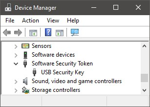

|
ST Japan Database
|
如何购买 ST日本 数据库
由于技术原因，无法直接从 ST日本 购买 ST日本数据库。
请直接联系 WITec 或当地代表，从 WITec 购买许可证和加密狗（价格无差异）。
ST日本数据库的安装
以下安装文件可供使用：
第1、2和3项的设置包含200个演示光谱的演示许可证。
注意，只有 WITec ST日本 安装文件才能与 TrueMatch / ParticleScout 配合使用，并且您必须安装与 ST日本 许可证匹配的版本。
ST日本许可证的安装
购买 ST日本 许可证后，您将获得一个 USB 硬件加密狗和一个名为"Access File"的文件。
Access File 的后缀为 ".stx"。
要安装 Access File，您可以打开 WITec TrueMatch，然后使用菜单 "TrueMatch -> 安装 ST日本 Access File"。浏览您的 Access File 并单击确定。
软件将询问您是否要安装 USB 加密狗驱动程序。如果之前未安装加密狗驱动程序，请单击是。
请确保在 "数据库 -> 管理数据库 .." 菜单中激活了 ST日本："显示 ST日本"。
现在 ST日本 许可证应可正常使用。
在搜索之前，您可以定义搜索应使用哪些数据库和类别。只需单击此图标：
故障排除
如果 ST日本 无法正常工作，请考虑以下解决方案：
